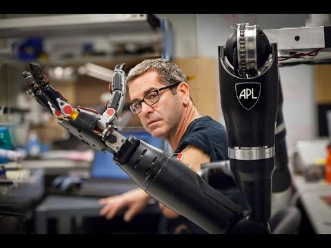
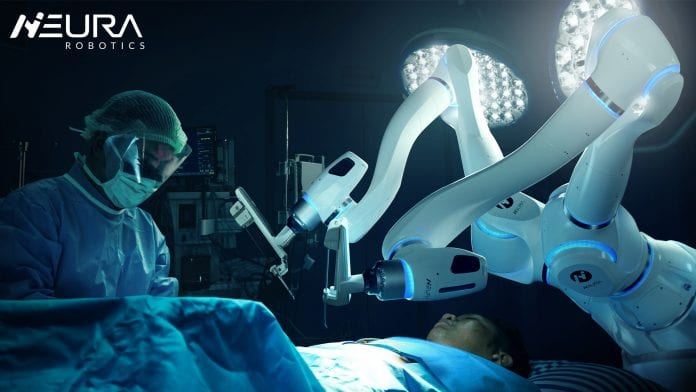

There aren't enough Bionic men on the planet to produce a proper stereotype.Even so, David the farmer seems atypical. Ruddy, red-haired, and impossibly cheerful when he meets us on the gravel path outside his workshop. What i was expecting-a grizzled retiree limping stiffly through his daily chores-bears no resemblance to this 30-something mechanic climbing down from a massive tractor without hesitation, weaving between ATVs and scattered engine parts, moving from task to task with no evidence that he's part machine. After a few minutes, there are clues, though: He always turns on his right leg, and his pants gather around his left ankle, hinting at a limb that's slightly skeletal and decidedly nonbiological.
Today that left leg will be replaced. That's why engineers from Össur, one of the world's largest prosthesis-makers, drove an hour west from the company's headquarters in Reykjavík, Iceland, to the farm where David Ingvason lives and works. David the Farmer—the nickname they've given their star prosthesis tester, though he is actually employed as a full-time, on-site mechanic—is one of a limited pool of amputees fitted with the Symbionic Leg: an artificial knee, ankle, and foot that are integrated into a single bionic limb.
On the farmland and surrounding terrain, in tall grass, and on moss-sprayed plains of volcanic rock, Ingvason regularly destroys his leg. He fouls the motors in muck and sludge, burns them out through unremitting use, and generally grinds one of the most sophisticated auto-adaptive devices on the planet, each one worth more than some sedans, into an inert, cybernetic paperweight. According to Össur's new technology search manager, Magnús Oddsson, all Ingvason has to do is call and they'll hand-deliver a new limb. More often, he swings by Reykjavík himself wearing a backup leg and asking for a repair or replacement. Whatever David the Farmer wants, he gets—the punishment he metes out to his leg, and the data that result, are simply too useful.
Össur began selling the Symbionic model as the world's first commercially available bionic leg last fall. It represents a significant shift in prostheses. The traditional half-measures, the stand-ins for lost limbs and senses, are now being imbued with machine intelligence. Ingvason's leg is, in fact, a robot, with sensors that detect its environment and gauge his intentions, and processors that determine the angle of his carbon-fiber foot as it swings forward. The same approach is being applied to prosthetic arms, in which complex algorithms determine how hard to grasp a water bottle or when to absorb the impact of a fall. Vision- and hearing-based prostheses bypass faulty organs and receptors entirely, processing and translating raw sensor data into signals that the brain can interpret. All of these bionic systems actively adapt to their users, restoring the body by serving it.
Take, for example, one of the most common prosthesis failures. A mechanical knee typically goes rigid as the heel lands, supporting the user's weight, then unlocks when pressure is applied to the toe. If that toe contact comes too early the leg collapses under its owner. The Symbionic Leg isn't so easily fooled. Force sensors and accelerometers keep track of the leg's position relative to the environment and the user. Onboard processors analyze this input at a rate of 1000 times per second, deciding how best to respond—when to release tension and when to maintain it.
Since the leg knows where it is throughout each stride, achieving a rudimentary form of proprioception, it takes more than a stubbed toe to trigger a loose knee. If the prosthesis still somehow misreads the situation, the initial lurch of the user falling should activate its stumble-recovery mode. Like antilock brakes for the leg, the actuators will slow to a halt, and magnetically controlled fluid in the knee will become more viscous, creating resistance, as the entire system strains to keep the person from crumpling or toppling.
The result, Ingvason says, is that he rarely falls, or no more often than someone with two biological legs. He can drive ATVs, hike across glaciers, even ride a horse while herding sheep. "I don't have to think about it," he says. Before he went bionic, Ingvason fell constantly. "With the old knee, it was every day, often more than once in a day," he says. "If I was walking and the toe hit something while swinging forward and I stepped on it, then I just went down. Now I'm walking on uneven ground and high grass and sand and mud and everything."
Ingvason's newly delivered limb is another Symbionic Leg, loaded with upgraded software that will allow the knee and the ankle to communicate with each other. Össur plans to develop this feature over the coming years, establishing what Oddsson calls networked intelligence. After putting it on, Ingvason limps, awkwardly at first, across dirt and gravel, past the rusting hulks of trucks and cars. Within a few minutes, the robot has calibrated itself.
With Ingvason's pant leg hitched up, it's impossible not to watch the limb in action. It's harsh and alien. The gray polymer shell, which partially conceals aircraft-grade aluminum, seems too skinny to support his weight; the ankle, too delicate for the 10,000 newtons of force it was built to withstand. But the leg is nimble and so quick to react, it's as though he were born with it.
The goal of current bionic research is to recover what was taken. In Ingvason's case, it's the leg he lost nearly 12 years ago, when he stopped to help a couple whose car had broken down in the rain. While he was working, another vehicle slipped off the wet road and plowed into him. Others' losses include arms torn off by industrial accidents or improvised bombs, and senses dulled or snuffed out by disease. Despite decades of study, the prostheses developed to replace lost functions have been at once ingenious and disappointing.
Most prosthetic devices create their own health problems. Purely mechanical legs use a complex system of gears and analog triggers to allow people to walk, but users must hike up one hip with each step to keep the artificial toe from scraping the ground. Powered prosthetic arms tend to be locked in place during walking—and that dead weight throws off the user's balance and posture. Roughly 70 percent of amputees develop back and joint problems, and experts suggest that such "co-morbidities" force those who might be obese or in chronic pain to become even less mobile and less healthy, ultimately shortening their lives.
The answer, for now, is in the algorithms. Össur's Symbionic Leg eliminates hip hiking through a simple robotic twitch: The toe actuates upward during each step, performing what's called dorsiflexion. Other algorithms are more sophisticated, interpreting a torrent of sensor data as specific types of terrain. If the foot lands at a higher elevation, with the knee bent, the leg assumes the presence of stairs and adjusts accordingly. If the toe tips up on contact and the heel dips down, the artificial intelligence (AI) suspects a slope and shifts the angle and resistance to assist in climbing.
The new generation of prosthetic arms has a different set of software challenges and solutions. DEKA, the research firm founded by inventor (and 2009 PM Breakthrough Award winner) Dean Kamen, is developing the third generation of its bionic limb, known internally as Gen 3. It's backed by DARPA's Revolutionizing Prosthetics program—a $100 million effort to create devices that are roughly equivalent in function to biological arms. Now awaiting FDA approval, Gen 3 has 10 degrees of freedom (typical motorized arms have only two or three) and a range of algorithms that mimic the precise control of its flesh-and-blood counterpart. By moving his or her foot, which operates a wireless controller, the user can engage various preset grasping patterns. Previous upper-limb models have used foot switches but with nowhere near the number of grip options, nor the machine intelligence and the force sensors that guide the artificial fingers and determine how much power should drive them. "The results have been incredible," says Stewart Coulter, the Gen 3 project manager. "The other day, one of our testers was eating with chopsticks, doing a better job than I could."
The second arm funded by the Revolutionizing Prosthetics program, the Modular Prosthetic Limb (MPL), developed at Johns Hopkins University, may lead to what many believe is the endgame for bionics: direct neural control. By embedding electrodes into a subject's existing nerves, or going through the skull and implanting them directly onto his or her cortex, researchers have been able to turn thoughts into action. In a study conducted in 2010 at the University of Pittsburgh, a quadriplegic pressed the MPL's hand against his girlfriend's. Through trial and error, processors are taught to decrypt a user's thoughts and recognize a growing list of intentions. "The system's smart. It has to be," says Michael McLoughlin, Revolutionary Prosthetics' project manager at Johns Hopkins. "The algorithms interpret what the patient is trying to do, then do it."
The MPL, in other words, isn't truly mind-controlled. The electrodes deliver orders, but it's the arm that decides how to carry them out. Or, rather, it's the network of machines—each jointed segment and finger with its own processor—that makes up the arm. The state of the art in powered prostheses is in some ways stranger than science fiction: a swarm of bots that obey the human mind, either through cables that snake out of the skull or by taking their best collective guess at those thoughts. Stranger still, this is just the beginning.
I tip my foot upward. The bionic foot that's bolted to the side of the table does the same. I press my toes into the floor and the prosthesis pivots downward into empty space. It's mirroring what I do, responding to the vibrations in my calf muscles, which are picked up by silicone-embedded microphones strapped to my bare leg. The system isn't detecting the full-blown tremors of muscle activity but a set of lower-level, initial rumblings that begin when the subject first intends to move.
Unlike the tests run in Össur's Gait Lab, where users wearing sensor rigs climb ramps and cross gravel and sand, this research is happening behind closed doors. It's part of the company's own quest to find an alternative to invasive neural control. "What we would like to do," Oddsson says, "is exactly what the user wants. And for that we need some kind of a brain–computer interface [BCI]." Like other efforts, it's a work in progress: The 125 milliseconds it takes for vibrations to be processed into action is still painfully slow compared with the near-instant reflexes of a biological limb. A foot muscle can respond to input within 40 milliseconds—faster than even the brain can deliver a response. But it's a technology worth pursuing.
In the long term, experts agree that while implanted interfaces could change the lives of millions of patients with amputations, spinal cord injuries, or neurological disorders, bionics that require major surgery will always be expensive, niche devices. For the millions suffering from debilitating strokes, or people with no serious disability but the money to pay for a wearable bionic system, a noninvasive BCI would change everything.
In other words, it's how we could reach that persistent fantasy of the able-bodied—true bionic augmentation. Even the most evasive experts I spoke with agreed that, while visions of superhuman amputees may be ridiculous, a combination of noninvasive BCIs and exoskeletons could turn decades of bionic research into a mainstream tool. California-based Ekso Bionics released the first commercially available exoskeleton in February; it's designed for patients with neurological or spinal cord damage. Billed as a "wearable robot," the system walks under its own power, currently via a remote control. An advanced version translates shifts in balance and feedback from canes into a natural stride. "That's the right use of the technology now, as a medical device," Ekso spokeswoman Beverly Millson says. "But it's really a technology platform. It's the beginning of wearing your devices, for whatever purpose you might have."
At MIT's Media Lab, prosthetics pioneer (and 2005 PM Breakthrough Award winner) Hugh Herr is still in the early stages of bionic augmentation research, with a lower-limb exoskeleton system that cuts in half the forces associated with walking. Herr, who lost both legs below the knee as a teenager, understands the need for restoration. He's spun off a company, iWalk, to market his BiOM robotic ankle-and-foot system, now in clinical trials. Yet he says the endgame of his own work would be some kind of bionic vehicle that commuters might use to literally run to the office. Imagine sprinting 60 miles without breathing hard, across terrain that would stop an ATV in its tracks. "Something like the mountain bike will be completely laughable," Herr says. "We'll still have trucks to transport goods. At that point, though, driving alone across town in a metal box with four wheels would be just absurd."
Before leaving Össur, I coax a few specifics out of Oddsson. He's a scientist through and through. But he must have some sci-fi-tinged vision of what's beyond the Symbionic Leg. He tells me he wants to take what Össur has learned about the human body and the intricacies of gait—the tremendous forces and physics at work in a single step—and create something that hijacks the nervous system directly. "It's not an exoskeleton. 'Smart trousers' might be more accurate," Oddsson says a little sheepishly. The goal at first would be to help stroke victims. The device would stimulate the muscles, providing commands that the brain or damaged nerves can't. "We would use the actuators that are already there, the muscles, and simply provide a new central controller," he says.
Eventually, Oddsson says, prosthetics research will disappear, replaced by advanced reconstructive technology. By 2050, he ballparks, limbs will be re-created—printed, grown, who knows?—and all of the arcane, biomechanical secrets collected by companies like Össur will be harnessed to finally restore flesh and bone. It's a strange best-case scenario: that an industry will innovate itself out of existence, its research seeding other scientific fields while all of that sophisticated technology migrates toward devices that change the way millions of us, abled or disabled, live and work.